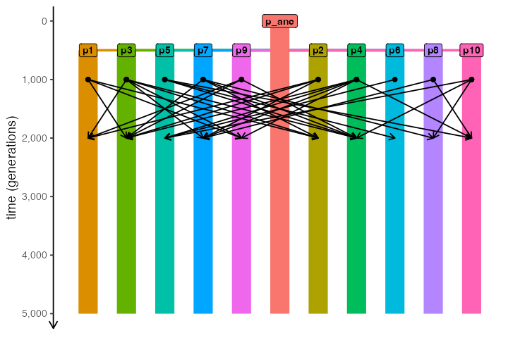

Demes on a regular spatial grid
Source:vignettes/vignette-02-grid-model.Rmd
vignette-02-grid-model.RmdIn this vignette, we will build a simple model of isolated populations laid out on a two-dimensional grid, each exchanging migrants with its immediate neighbors.
The purpose of the vignette is to demonstrate the power of R as a foundation for building complex slendr models from simpler components. Although there is no built-in functionality for such classic “demes on a regular grid” models in the slendr package, the fact that we have the complete functionality of R at our disposal makes it possible to easily program relatively complex models from the convenient environment of R using a couple of simple model-building primitives and automatically execute such models in SLiM.
If you have worked with SLiM before, you will recognize that a nearly identical idea is implemented in SLiM’s Eidos language in section 5.3.3 of the SLiM manual. One difference in this example is that our model is explicitly spatial, unlike the example from the manual where spatiality is only approximated using a random-mating model.
Simple two-dimensional grid model
First, let’s load the slendr R package and create a two-dimensional abstract world map:
#> The interface to all required Python modules has been activated.Next, we define a helper function which will a) create a single slendr population object, b) place that population at an appropriate coordinate on the lattice on the world map based on the numeric identifier of the population i (where i runs from 1 to \(n \times n\) , n being the total number of demes along one side of the regular grid):
create_pop <- function(i, n_side, map, N, radius) {
# get dimensions of the world map
dim <- c(diff(attr(map, "xrange")), diff(attr(map, "yrange")))
# position of the i-th population on the two-dimensional lattice grid
coords <- c((i - 1) %% n_side, (i - 1) %/% n_side)
center <- coords / n_side * dim + dim / (2 * n_side)
pop <- tryCatch({
population(
name = sprintf("pop%d", i),
N = N,
time = 1,
map = map,
center = center + c(attr(map, "xrange")[1], attr(map, "yrange")[1]),
radius = radius
)
}, error = function(e) NULL)
pop
}Having defined the population construction function, let’s build our model. Let’s say that we want to create a regular grid of n × n populations, with N individuals in each population:
n <- 5
populations <-
seq(1, n * n) %>%
lapply(create_pop, n_side = n, map = map, N = 100, radius = 40)Let’s plot the whole spatial population configuration, to make sure we set up things correctly:

So far, the way the model is specified, each population would be
stuck on its own circular “island”. We can change that by programming
gene flow events using the slendr function
gene_flow(). Again, let’s first program a simple helper
function which will generate gene flow events according to neighborhood
relationships on the two-dimensional grid, allowing each population to
exchange migrants with each of its neighbors (making sure the
coordinates of each population stay within the grid using simple modulo
arithmetic on the population index i).
set_geneflow <- function(i, n_side, rate, start, end, populations) {
pop <- populations[[i]]
# get the position of the i-th population on the n*n grid
coords <- c((i - 1) %% n_side, (i - 1) %/% n_side)
# get coordinates of the i-th population's neighbors on the grid
neighbor_pos <- list(
c(coords[1] - 1, coords[2]), c(coords[1] + 1, coords[2]),
c(coords[1], coords[2] + 1), c(coords[1], coords[2] - 1)
)
# generate geneflow events for population coordinates inside the grid
geneflows <- lapply(neighbor_pos, function(pos) {
if (any(pos < 0 | pos >= n_side)) return(NULL)
neighbor <- populations[[pos[2] * n_side + pos[1] + 1]]
if (is.null(neighbor)) return(NULL)
rbind(
gene_flow(from = pop, to = neighbor, rate = rate, start = start, end = end, overlap = FALSE),
gene_flow(from = neighbor, to = pop, rate = rate, start = start, end = end, overlap = FALSE)
)
}) %>%
do.call(rbind, .)
geneflows
}Let’s test this function. What would be the gene flow events of the population in the lower left corner of the grid (so, the very first population in the series)? If everything works, this population should only be allowed to exchange migrants with its neighbor to the right (population number 2) and its neighbor above.
set_geneflow(1, n, rate = 0.1, start = 2, end = 1000, populations)#> from_name to_name tstart tend rate overlap
#> 1 pop1 pop2 2 1000 0.1 FALSE
#> 2 pop2 pop1 2 1000 0.1 FALSE
#> 3 pop1 pop6 2 1000 0.1 FALSE
#> 4 pop6 pop1 2 1000 0.1 FALSELooks right! Let’s generate the entire set of continuous gene flow events:
geneflows <-
seq(1, n * n) %>%
lapply(set_geneflow, n, rate = 0.05, start = 2, end = 1000, populations) %>%
do.call(rbind, .) %>%
unique # filter out duplicate events due to symmetriesThe total number of individual gene flow events is:
nrow(geneflows)#> [1] 80Finally, we can compile the whole model:
model <- compile_model(
populations = populations, gene_flow = geneflows,
generation_time = 1, resolution = 10,
competition = 10, mating = 10, dispersal = 10,
simulation_length = 1000
)Those familiar with the SLiM manual will recognize a model described in section 5.3.3.
Finally, we can run our simulation using the slim()
function.
ts <- slim(model, sequence_length = 10000, recombination_rate = 0) # simulate a single 10kb locus
ts#> ╔═══════════════════════╗
#> ║TreeSequence ║
#> ╠═══════════════╤═══════╣
#> ║Trees │ 1║
#> ╟───────────────┼───────╢
#> ║Sequence Length│ 10000║
#> ╟───────────────┼───────╢
#> ║Time Units │ ticks║
#> ╟───────────────┼───────╢
#> ║Sample Nodes │ 5000║
#> ╟───────────────┼───────╢
#> ║Total Size │1.3 MiB║
#> ╚═══════════════╧═══════╝
#> ╔═══════════╤════╤═════════╤════════════╗
#> ║Table │Rows│Size │Has Metadata║
#> ╠═══════════╪════╪═════════╪════════════╣
#> ║Edges │9078│283.7 KiB│ No║
#> ╟───────────┼────┼─────────┼────────────╢
#> ║Individuals│6346│621.3 KiB│ Yes║
#> ╟───────────┼────┼─────────┼────────────╢
#> ║Migrations │ 0│ 8 Bytes│ No║
#> ╟───────────┼────┼─────────┼────────────╢
#> ║Mutations │ 0│ 1.2 KiB│ No║
#> ╟───────────┼────┼─────────┼────────────╢
#> ║Nodes │9103│338.5 KiB│ Yes║
#> ╟───────────┼────┼─────────┼────────────╢
#> ║Populations│ 25│ 5.7 KiB│ Yes║
#> ╟───────────┼────┼─────────┼────────────╢
#> ║Provenances│ 1│ 33.9 KiB│ No║
#> ╟───────────┼────┼─────────┼────────────╢
#> ║Sites │ 0│ 16 Bytes│ No║
#> ╚═══════════╧════╧═════════╧════════════╝Population grid on a real geographic landscape
We can take things one step further. What if we wanted to do a similar thing (i.e. simulate regularly spaced demes) but in a real geographic context?
Let’s zoom in on some interesting part of the world and then create a
grid of demes using the same helper function create_pop we
defined above (each population boundary being 300 km in diameter):
map <- world(
xrange = c(-25, 55),
yrange = c(-32, 35),
crs = 4326
)
n <- 20
populations <-
seq(1, n * n) %>%
lapply(create_pop, n_side = n, map = map, N = 100, radius = 1.5)Of course, when we lay out a regular grid across a map of the world, some population boundaries would fall outside the African continent. To solve this issue, we will go through the list of all populations and filter to those with at least 50% of their area on land, using another helper function:
continent <- region(
map = map, polygon = list(
c(-10, 35), c(-20, 20), c(-15, 8), c(-10, 5), c(0, 2),
c(20, -40), c(35, -32), c(50, -25), c(55, -10), c(50, 0),
c(53, 13), c(45, 10), c(37, 20), c(32, 30), c(16, 38), c(0, 38)
)
)
check_area <- function(pop, map, continent) {
if (is.null(pop)) return(NULL)
# total population area
pop_area <- area(pop)$area
# population area overlapping a map
map_area <- area(overlap(pop, map))
# population area overlapping African continent
continent_area <- area(overlap(pop, continent))
# at least 50% of population's boundary be on land, and it must fall
# on to the African continent itself
if (continent_area == 0 || (map_area / pop_area) < 0.5)
return(NULL)
else
return(pop)
}
filtered <- lapply(populations, check_area, map, continent) %>%
Filter(Negate(is.null), .)Let’s plot the layout of the population grid on the real geographic background:
Next, we would probably set up some scenario of gene flow between
subpopulations; perhaps we would be interested in studying how a
selected allele spreads through the continent based on some factors of
interest. Then, to simulate data from this spatial model, we would first
have to compile_model() it and then run it in SLiM via the
slim() function. Given that this is the same process we
described in the example above, we won’t be repeating it here.
More customized spatial model
If we want to introduce spatiality into our model but need a more manual control over the position of each subpopulation, we can of course customize the spatial layout in much more detail.
Consider the followin map of South America:
xrange <- c(-90, -20)
yrange <- c(-58, 15)
map <- world(xrange = xrange, yrange = yrange, crs = "EPSG:31970")
plot_map(map)Let’s lay out demes in a more scattered, irregular fashion. For
illustration purposes, we will define each population’s geographic range
as a circle with the radius of 200 km. Importantly, note that we have
introduced one ancestral population but that that population does not
have an associated location on a world map! Because we want to simulate
data with a coalescent backend, we have to formally encode a
population in which all genealogies eventually coalesce. In other words,
the models we have specified above would not run with the
msprime() back end because they contain isolated demes
which do not formally descend from a single ancestor had we run these
models with msprime, we would get an error about infinite coalescent
times. This is why we formally introduce an ancestral population
here:
# non-spatial ancestral population
p_anc <- population("p_anc", N = 1000, time = 1, remove = 500)
# spatial populations
p1 <- population("p1", N = 1000, time = 500, parent = p_anc, map = map, center = c(-75, 0), radius = 200e3)
p2 <- population("p2", N = 1000, time = 500, parent = p_anc, map = map, center = c(-60, 5), radius = 200e3)
p3 <- population("p3", N = 1000, time = 500, parent = p_anc, map = map, center = c(-65, -5), radius = 200e3)
p4 <- population("p4", N = 1000, time = 500, parent = p_anc, map = map, center = c(-60, -20), radius = 200e3)
p5 <- population("p5", N = 1000, time = 500, parent = p_anc, map = map, center = c(-65, -35), radius = 200e3)
p6 <- population("p6", N = 1000, time = 500, parent = p_anc, map = map, center = c(-69, -42), radius = 200e3)
p7 <- population("p7", N = 1000, time = 500, parent = p_anc, map = map, center = c(-51, -10), radius = 200e3)
p8 <- population("p8", N = 1000, time = 500, parent = p_anc, map = map, center = c(-45, -15), radius = 200e3)
p9 <- population("p9", N = 1000, time = 500, parent = p_anc, map = map, center = c(-71, -12), radius = 200e3)
p10 <- population("p10", N = 1000, time = 500, parent = p_anc, map = map, center = c(-55, -25), radius = 200e3)Furthermore, let’s say we have a fairly good idea about a very complex interaction/gene-flow network between each deme, which we can encode like this (instead of forcing a regular arrangement of demes and gene-flow interactions in previous examples):
gf <- list(
gene_flow(p1, p2, 0.1, 1000, 2000, overlap = FALSE),
gene_flow(p2, p1, 0.1, 1000, 2000, overlap = FALSE),
gene_flow(p1, p3, 0.1, 1000, 2000, overlap = FALSE),
gene_flow(p3, p1, 0.1, 1000, 2000, overlap = FALSE),
gene_flow(p2, p3, 0.1, 1000, 2000, overlap = FALSE),
gene_flow(p3, p2, 0.1, 1000, 2000, overlap = FALSE),
gene_flow(p2, p7, 0.1, 1000, 2000, overlap = FALSE),
gene_flow(p7, p2, 0.1, 1000, 2000, overlap = FALSE),
gene_flow(p3, p7, 0.1, 1000, 2000, overlap = FALSE),
gene_flow(p7, p3, 0.1, 1000, 2000, overlap = FALSE),
gene_flow(p7, p8, 0.1, 1000, 2000, overlap = FALSE),
gene_flow(p8, p7, 0.1, 1000, 2000, overlap = FALSE),
gene_flow(p4, p7, 0.1, 1000, 2000, overlap = FALSE),
gene_flow(p7, p4, 0.1, 1000, 2000, overlap = FALSE),
gene_flow(p4, p5, 0.1, 1000, 2000, overlap = FALSE),
gene_flow(p5, p4, 0.1, 1000, 2000, overlap = FALSE),
gene_flow(p5, p6, 0.1, 1000, 2000, overlap = FALSE),
gene_flow(p6, p5, 0.1, 1000, 2000, overlap = FALSE),
gene_flow(p3, p4, 0.1, 1000, 2000, overlap = FALSE),
gene_flow(p4, p3, 0.1, 1000, 2000, overlap = FALSE),
gene_flow(p1, p9, 0.1, 1000, 2000, overlap = FALSE),
gene_flow(p9, p1, 0.1, 1000, 2000, overlap = FALSE),
gene_flow(p3, p9, 0.1, 1000, 2000, overlap = FALSE),
gene_flow(p9, p3, 0.1, 1000, 2000, overlap = FALSE),
gene_flow(p4, p9, 0.1, 1000, 2000, overlap = FALSE),
gene_flow(p9, p4, 0.1, 1000, 2000, overlap = FALSE),
gene_flow(p10, p4, 0.1, 1000, 2000, overlap = FALSE),
gene_flow(p4, p10, 0.1, 1000, 2000, overlap = FALSE),
gene_flow(p10, p8, 0.1, 1000, 2000, overlap = FALSE),
gene_flow(p8, p10, 0.1, 1000, 2000, overlap = FALSE),
gene_flow(p10, p5, 0.1, 1000, 2000, overlap = FALSE),
gene_flow(p5, p10, 0.1, 1000, 2000, overlap = FALSE)
)Now we can compile the model `with a twist, however: because we will only try to simulate data in a non-spatial way using msprime, we will skip the serialization of model data to disk, and skipping all spatial interaction and dispersal parameters. In other words, we only care about simulating a demographic model of traditional, Wright-Fisher, random-mating demes and gene flow between them, not about the dispersal within each individual deme. Why? Mostly just to demonstrate this is possible! However, there are certainly situations where this “half-spatial” model would be useful – for instance, in situation where within-deme individual dynamics are not of interest, but the location of each subpopulation is.
model <- compile_model(
populations = list(p_anc, p1, p2, p3, p4, p5, p6, p7, p8, p9, p10), gene_flow = gf,
generation_time = 1, simulation_length = 5000,
serialize = FALSE
)#> Warning: Model containing a mix of spatial and non-spatial populations will be compiled.
#> Although this is definitely supported, make sure this is really what you want.#> Warning: Spatial models must be serialized to disk for SLiM to simulate data from.
#> Compiled like this, your model can only be simulated with msprime.We can make sure the demographic model is specified correctly by quickly visualizing it:
plot_model(model)
We can also plot the spatial organization of our demes on a map in all of its glory, including all gene flow events (one arrow per each unidirectional gene flow). Note that we get a warning message stating that the (non-spatial) ancestral population won’t be visualized on a map:
plot_map(model, gene_flow = TRUE)#> Warning: All gene-flow event will be visualized at once. If you wish to visualize
#> gene flows at a particular point in time, use the `time` argument.#> Warning: Non-spatial populations in your model won't be visualized
Finally, we can simulate the tree sequence from the model! Notice
that we are simulating data using msprime(), which is
effectively dropping the continuous space dimension of our model. In
this situation, the map above serves more as a visual aid, making it
easier to set up a complex “spatial” position of demes on a map.
ts <- msprime(model, sequence_length = 10e6, recombination_rate = 1e-8, random_seed = 42)
ts#> ╔═══════════════════════════╗
#> ║TreeSequence ║
#> ╠═══════════════╤═══════════╣
#> ║Trees │ 33779║
#> ╟───────────────┼───────────╢
#> ║Sequence Length│ 10000000║
#> ╟───────────────┼───────────╢
#> ║Time Units │generations║
#> ╟───────────────┼───────────╢
#> ║Sample Nodes │ 22000║
#> ╟───────────────┼───────────╢
#> ║Total Size │ 8.8 MiB║
#> ╚═══════════════╧═══════════╝
#> ╔═══════════╤══════╤═════════╤════════════╗
#> ║Table │Rows │Size │Has Metadata║
#> ╠═══════════╪══════╪═════════╪════════════╣
#> ║Edges │176002│ 5.4 MiB│ No║
#> ╟───────────┼──────┼─────────┼────────────╢
#> ║Individuals│ 11000│300.8 KiB│ No║
#> ╟───────────┼──────┼─────────┼────────────╢
#> ║Migrations │ 0│ 8 Bytes│ No║
#> ╟───────────┼──────┼─────────┼────────────╢
#> ║Mutations │ 0│ 16 Bytes│ No║
#> ╟───────────┼──────┼─────────┼────────────╢
#> ║Nodes │ 67725│ 1.8 MiB│ No║
#> ╟───────────┼──────┼─────────┼────────────╢
#> ║Populations│ 11│605 Bytes│ Yes║
#> ╟───────────┼──────┼─────────┼────────────╢
#> ║Provenances│ 1│ 10.4 KiB│ No║
#> ╟───────────┼──────┼─────────┼────────────╢
#> ║Sites │ 0│ 16 Bytes│ No║
#> ╚═══════════╧══════╧═════════╧════════════╝